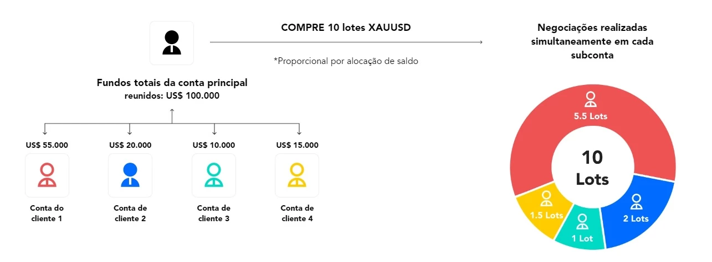

Seus investimentos em um outro nível com a Inteligência Artificial.
MERCADO INTERNACIONAL
O que é Forex?
Forex (Foreign Exchange), em português significa Mercado de Câmbio. Neste tipo de mercado financeiro são negociadas as moedas internacionais.
O mercado de Forex é um dos mais lucrativos e sérios do mundo. Este tipo de investimento tem como base a especulação financeira.
Como funciona o Forex?
O mercado forex funciona com a movimentação de contratos de moedas em pares. Então, você precisa comprar uma e vender a outra simultaneamente, definindo o tipo de movimento que acredita que vai acontecer.
Há cerca de 40 moedas disponíveis. Vale ressaltar que o que ocorre nesse mercado são apenas relações de trocas entre ativos, ou seja, não há uma negociação de moedas físicas.
Para se ter uma ideia, em termos de volume de dinheiro, ele movimenta o equivalente a mais de 5 trilhões de dólares americanos diariamente.
ASSISTA ABAIXO UM BATE PAPO COM OS IDEALIZADORES DO PROJETO:
FUNDO DE INVESTIMENTO
O QUE É CONTA PAMM?
Uma conta PAMM (Percent Allocation Management Module) também é uma conta administrada no mercado Forex.
No entanto, a principal diferença entre uma conta PAMM e uma conta MAM é a forma como os lucros e perdas são distribuídos entre o gestor de investimentos e os investidores.
Na conta PAMM, os investidores investem seu capital na conta do gestor de investimentos, que é então usado para negociar no mercado Forex. Os lucros e perdas são distribuídos proporcionalmente com base no valor do investimento de cada investidor na conta do gestor.
Uma das vantagens de uma conta PAMM é a transparência. Os investidores têm acesso em tempo real às negociações realizadas pelo gestor e podem acompanhar o desempenho da conta. Além disso, a conta PAMM permite que os investidores diversifiquem seus investimentos, pois podem investir em várias contas PAMM gerenciadas por diferentes gestores.
POR QUE SE TORNAR UM CLIENTE DO GPT.TRADER_IA?
Seu investimento estará no mercado internacional, rendendo em dólar, e oferecemos um serviço superior.
Liquidez do capital - Seu capital estará em sua conta na corretora, e você pode pedir o saque a qualquer momento. Mas para não prejudicar as operações e os rendimentos, orientamos a fazer isso quando as operações estiverem fechadas.
Vários ativos - Nossa IA (inteligência Artificial) analisa o mercado a cada segundo para indentificar as melhores oportunidades para entrar e sair das operações. E analisamos os principais ativos do mercado como: EURCAD, EURCHF,EURUSD, GBPUSD, GBPCHF, GBPAUD, AUDUSD, AUDCAD, AUDCHF,NZDUSD, USDCHF, USDCAD.
Acompanhamento das operações - O cliente poderá acompanhar as operações em tempo real pela plataforma Meta Trader MT5 pelo celular ou pelo computador, mas não terá acesso a abrir ou fechar, apenas acompanhar as operações. E vai conseguir ver os relatórios por períodos.
Fácil acesso a conta PAMM - Todo acesso é fácil e simples, pois fazemos tudo por uma das melhores corretoras do mundo onde temos um atendimento personalizado para os nossos clientes. Basta seguir o passo a passo para fazer o cadastro na corretora e terá todo o acompanhamento para vincular seu capital a conta PAMM. O investimento mínimo para iniciar é de $200 dólares.
Suporte personalizado - Além do suporte da equipe do GPT.TRADER_IA temos um suporte personalizado da corretora.
RESULTADOS
Nossos resultados são provenientes de um Setup operacional de anos de teste.
Em Novembro de 2023 iniciamos uma conta Demo onde vamos continuar com este histórico, que é a nossa base operacional.
Para acompanhar nossos resultados pelo MyFxBook, basta clicar no botão abaixo:
Assim que iniciarmos a nossa conta PAMM, também iremos colocar o link do MyFxBook dela.
Você também pode ver o histórico da minha conta clicando no botão abaixo:
LICENÇA
Temos consciência do enorme potencial que temos nas mãos. Um Setup Operacional com IA (inteligência artificial) e com uma Gestão de Risco altamente eficiente que faz deste operacional um dos melhores do mundo hoje. Prova disso está em nosso resultado!
Mediante isso para você se tornar cliente e ter acesso a este operacional se faz necessário adquirir uma licença de 1 ano para poder vincular o seu capital a este operacional na corretora.
Clique no botão abaixo para adquirir sua licença:
De R$598,00
Por R$299,00
Ou em 12x de R$30,02